Importing Data
Import Data¶
SEED is primarily a data management platform, and importing the data is a critical component to understand.
Overview
Overview¶
SEED can import data from many different sources, for example:
Building / Property Data¶
Building and property lists can sometimes be difficult to create. There are a few different sources of data that may help, which can be imported into SEED in the form of spreadsheets with one line per building, such as:
- Tax assessor lists
- Real estate data
Benchmarking data¶
One of the primary sources of building information for benchmarking and Building Performance Standards (BPS) ordinances is data entered by building owners into ENERGY STAR® Portfolio Manager® which is then shared with jurisdictions who are determining compliance with the ordinances.
SEED can import data from spreadsheets downloaded from ENERGY STAR Portfolio Manager and then imported into SEED. It is also possible to log into an ENERGY STAR Portfolio Manager account directly from SEED and specify a "Custom Report Template" to be imported.
Match data from different sources¶
One of the strengths of SEED is that data for a specific building or property can be imported from multiple sources and then matched and merged within SEED so that all the information related to that building is collected in one platform.
In order for the data from different sources to be merged together, there must be one or more "matching" fields that are in all the data. These fields are identified during the data import "Mapping" step, which will be discussed in the next section. These matching fields typically include:
- Tax Assessor Parcel ID
- Custom Building ID
- ENERGY STAR Portfolio Manager ID
- Unique Building ID (UBID)
Handle data with different types of relationships¶
In addition to matching and merging data for the same building or property, SEED can establish a relationship between a Tax Assessor Parcel and the buildings or properties associated with that parcel. Establishing this relationship is optional, but if Tax Assessor Parcel data is used to begin the creation of a building or property list, or the parcel / building relationship is desired, SEED can accomplish this during the mapping process, as long as there is both a tax parcel ID and a building or property ID in the data being imported.
The image below shows the possibilities of tax parcel and building relationships:
- Case A: A one to one relationship, ie, one building on one parcel
- Case B: Multiple buildings on one parcel
- Case C: One building on multiple parcels
- Case D: Multiple buildings on multiple parcels, such as a campus > scenario
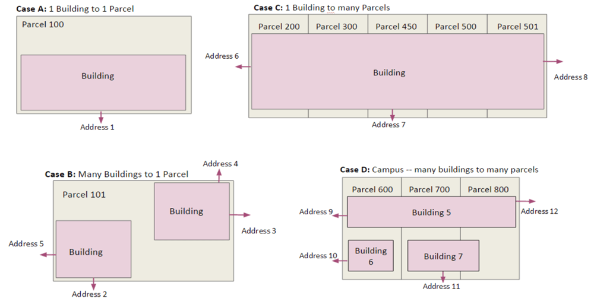
The SEED data model establishes the relationship between the tax parcels and buildings as shown in the simplified diagram below. In the main Inventory list view, there are two tabs, one for Property and one for Tax Lot.

Maintain data based on compliance year¶
Data is imported into SEED by "cycles", which are generally defined on a calendar basis, to keep track of the annual compliance of buildings. There are several features in SEED which allow importing, viewing, and analyzing the status of buildings across cycles.
Data import workflow¶
The first three steps in the diagram below shows the workflow when importing data into SEED

Before importing data¶
There are a few steps that should be completed before importing data, in order to have a smooth process.
- Define cycles
- Define Matching fields
Cycles
Cycles¶
Define Cycles in Organizations / Cycles¶
It is important to create the appropriate cycle to import the data into. SEED has one "default" cycle that can be used as is, or edited to suit the first data import. It is also possible to make as many cycles as needed to import the data.


Data files with multiple years of data¶
If a file is to be imported with multiple cycles (years) of data in it, the appropriate cycles need to be defined before importing the data. For example, if there is data from 2019, 2020 and 2021 in one file, and that data is to be associated with the cycle for each year, a cycle for each of those years needs to be defined. SEED uses a field called "Year Ending" to determined the cycle. This is a default field that is in ENERGY STAR Portfolio Manager data, but could be added to other data if needed.

Make sure that a cycle is defined for each year of data in the data file.

Matching Fields
Matching Fields¶
Define Matching fields in Organizations / Column Settings¶
In order to map the fields properly when importing data, it is important to define the fields that will be the "matching" fields across data files.
The matching fields are defined in Organizations / Column Settings. There is a column called "MATCH CRITERIA", and the fields that are matching fields should be checked. There can be just one field defined, or multiple fields. Standard fields for matching are the PM Property ID field from ENERGY STAR Portfolio Manager, and/or the Custom ID 1 field, which can represent any unique building ID.
The Column Description field can be edited to represent a more descriptive name. For example, if the matching field is Custom ID 1, that Column Description could be changed to "City X Building ID".
Default matching fields for Properties include:
- PM Property ID (ENERGY STAR Portfolio ID)
- Custom ID 1 (A custom ID for each building)
- UBID (Unique Building ID, generated according to a specific algorithm)
Default matching fields for Tax Lots include:
- Jurisdiction Tax Lot ID
Although additional matching fields can be selected, note that matching fields cannot be unselected once data is imported. Therefore, it is important to review your matching field criteria prior to importing data for the first time. The addition of a matching field will trigger a round of matching and merging of records, similar to the process that occurs during data import.

Once the cycles are properly defined and the matching fields are set, it is time to import the data
Import data - General¶
The first few steps for importing Property and Tax Parcel data are the same
Overview
Overview¶
There are a few different ways to start importing data. You can click the DATA navigation button on the left side of the screen, or you can click on the "Upload your Buildings List" button on the main SEED Platform screen.

Create a Data Set
Create a Data Set¶
The DATA navigation button on the left side of the application will display the screen shown below, where a new data set can be created. The Data Set Name can be any text that describes the data set that is being created. There will potentially be multiple files imported in a data set.

Clicking the "Create Data Set" button will open the screen shown below, which has several options for what type of data to upload, as well as how to upload it.
The first step is to assign this data upload to a cycle -- the pull down list will show all the cycles that are defined. It is also possible to define a new cycle by clicking the "Manage available cycles" link under the Cycle pulldown. And if the file being imported has multiple years defined (based on a field called "Year Ending") the "Multiple Cycle Upload" box can be checked.

Upload a Spreadsheet
Upload a Spreadsheet¶
The first option in the list of upload options is "Upload a Spreadsheet".
This option assumes that the spreadsheet will have one record per property or tax parcel. This spreadsheet can contain both property / building and tax parcel information, or it can be just one or the other.
Here is an example of a spreadsheet representing a list of tax parcels that have buildings on them. Each row represents a tax parcel.

Here is an example spreadsheet of building information from ENERGY STAR Portfolio Manager for the same buildings. In this case, each row represents an individual building, and each row has the tax parcel ID associated with the building.

When these two spreadsheets are imported into SEED, the relationship between the tax lots and buildings can be established in the mapping step.
Import Tax Parcel Data¶
Upload a Spreadsheet
Upload a Spreadsheet¶
First, import the tax parcel spreadsheet into the data set by clicking the Upload a Spreadsheet button, navigating to the file to be imported, and as the file is imported, messages will appear to show the progress of the upload.

This message appears when the file has completed the first upload step. Click the "Continue to data mapping" button to move to the next step.

Map the Fields
Map the Fields¶
The Mapping screen will now appear, and the fields in the uploaded file need to be mapped to the appropriate SEED fields.
If this is the first file being imported, the easiest way to start the mapping is to click the "Copy Data File Headers directly to SEED headers" which copies the fields from the right hand side (the fields in the uploaded file) to the SEED Mapped Fields on the left side.
Select "Tax Lot" for the "Set all fields to" pulldown list
Change the field called "Parcel Number" to the matching field "Jurisdiction Tax Lot ID".


Save the final mapping to a "Column Mapping Profile name, to save the mappings for another file of the same structure.

This creates a Column Mapping profile that can be used again for another file with the same fields.

Then click the Map Your Data button to go to the Mapping Review screen.

Review the Mapped Data
Review the Mapped Data¶
In the Mapping Review screen all the records will be displayed, with the new field mapping. If there is anything that needs to be changed, click the Back to Mapping button and the mapping can be changed as needed.

Save Field Mappings and View the Results in the Inventory List View
Save Field Mappings and View the Results in the Inventory List View¶
Click the Save Mappings button to complete the data upload process; a confirmation screen will be displayed. Click the Confirm mappings

A progress bar will be displayed.

When the matching is complete, a summary of what was imported will be displayed.

Click the View my Properties to go to the Inventory list to see the uploaded data.
To see the Tax Lot data, click on the Tax Lot tab

Import ENERGY STAR® Portfolio Manager® Data¶
Import Options
Import Options¶
There are two methods for importing ENERGY STAR Portfolio Manager Data
- Option 1: Download a spreadsheet from the ENERGY STAR Portfolio Manager application and import that spreadsheet into SEED, in the same manner as any spreadsheet.
- Option 2: Log in to the ENERGY STAR Portfolio Manager account from SEED and specify the Custom Report Template to upload into SEED. This eliminates the need to use the spreadsheet option.

Option 1: Upload an ENERGY STAR Portfolio Manager Spreadsheet
Option 1: Upload an ENERGY STAR Portfolio Manager Spreadsheet¶
After uploading the tax lot spreadsheet, the next step might be to load the ENERGY STAR Portfolio Manager spreadsheet for the buildings associated with the tax lots already imported.
ENERGY STAR Portfolio Manager data can also be imported by itself, without having imported tax lot data.
The same steps are followed as any other spreadsheet:
- In the same Data Set, click the Add more data files link

- Make sure the same cycle is selected, then click the Upload a Spreadsheet button.

- Browse to the appropriate file
Option 2: Import ENERGY STAR Portfolio Manager Building Data
Option 2: Import ENERGY STAR Portfolio Manager Building Data¶
It is possible to log directly into an ENERGY STAR Portfolio Manager account and specify the Custom Report Template to import. With this option, SEED will automatically regenerate the Custom Report Template in the ENERGY STAR Portfolio Manager account, and then download the data to SEED.
- Make sure to select the correct Cycle
- Click the "Import Portfolio Manager Data" from the Import screen
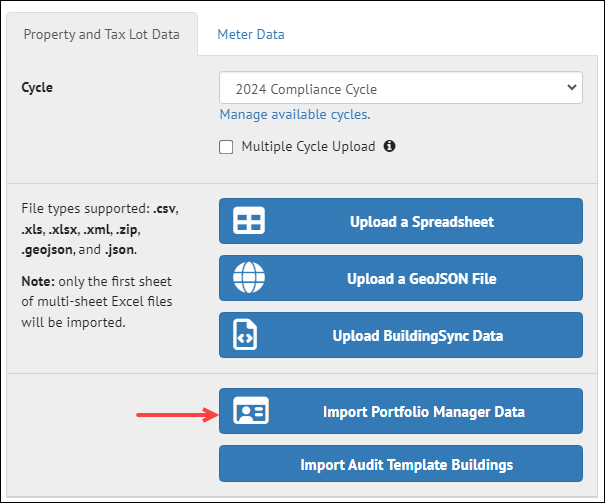
- Input the Username and Password into the appropriate fields
- Click the "Get Report Templates" button, which will cause all the Custom Report Templates for that account to be displayed.
- Select the desired Custom Report Template
- Click the "Submit" button
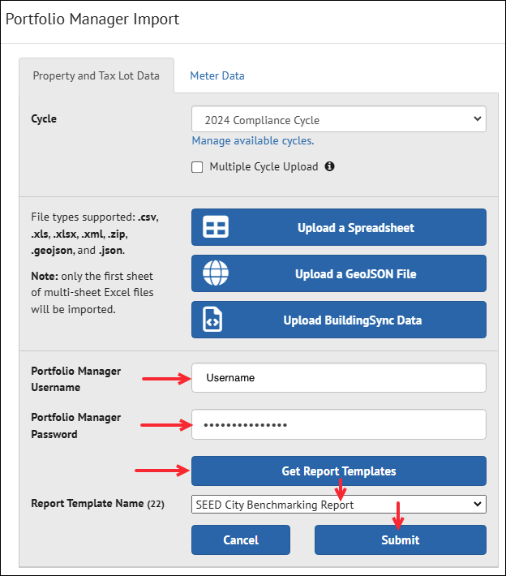
Map the Fields
Map the Fields¶
In the Mapping screen - Copy the Data File headers to the SEED headers - Set the INVENTORY TYPE to Property for all fields except "Parcel ID" - Set the INVENTORY TYPE to Tax Lot for the "Parcel ID" field, and change the SEED Header mapping to the Tax Lot matching field "Jurisdiction Tax Lot ID". This will establish the relationship between the PM Property ID Matching field and the Jurisdiction Tax Lot field for each record - Save the final mapping to a new Column Mapping Profile - Click Map Your data to go to the Mapping Review screen

Mapping the Parcel ID to the Tax Lot table and the PM Property ID to the Property table results in records where the data from each can be viewed together.

Review the Mapped Data and View the Results in the Inventory List View
Review the Mapped Data and View the Results in the Inventory List View¶
The Mapping Review screen will show the records mapped to the Properties table and the records mapped to the Tax Lot table

Click Save Mappings to finish the record mapping and matching process
The progress bar will be displayed

The results of the matching and merging will be displayed

Click the View my properties button to view the imported data in the Inventory List View

Import Meter Data - General¶
Meter data associated with a building, both monthly and other time intervals, can be imported into SEED, either at the time of the regular building data import if the data is in the same file, or as a separate import
Import Options
Import Options¶
There are two type of meter data that can be imported into SEED.
- ENERGY STAR Portfolio Manager Monthly Data Spreadsheet
- Monthly meter data can be exported from ENERGY STAR Portfolio Manager, and then imported into SEED
- This monthly meter data can be in two different formats depending on how it was reported (and exported)
- Meter data is in columns by meter
- Meter data is in rows by meter
- Green Button XML Interval Data
- Imported in the Property Detail Meter page
Multiple meters per building
- A building can have multiple meters from different sources and fuel types, which will be imported as separate meters into SEED if the data if formatted properly
Import ENERGY STAR Portfolio Manager Meter Data¶
Overview
Overview¶
The two options for how meter data can be exported from ENERGY STAR Portfolio Manager are that the data is formatted either with:
- Meter data in columns
- Meter data in rows
Meter data in columns¶
In the screenshot below, the meter data is formatted so that the meter data is in columns
There are two tabs:
- Information and Metrics: The first tab has basic property information, including the Portfolio Manager Property ID (mapped to PM Property ID in SEED)
- Monthly Usage: The second tab contains the monthly meter data, with a column for the Portfolio Manager Property ID (so that the meter can be matched to the property in the first tab), the month, and then a column for each of the meter data types, which are generally Natural Gas and Electricity, but can be other types depending on what was entered into ENERGY STAR Portfolio Manager for the building.
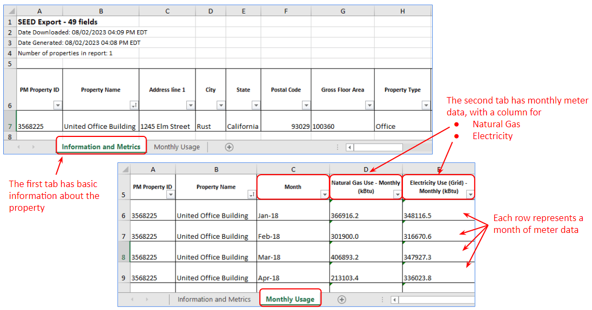
Meter data in rows¶
In the screenshot below, the meter data is formatted so that the meter data is in rows
There are three tabs:
- Properties: The first tab has basic property information, including the Portfolio Manager Property ID (mapped to PM Property ID in SEED)
- Meters: The second tab contains a row for each meter; in the example below, there are two meters, one for Natural Gas and one for Electricity from the grid, each with it's own unique ID to tie it to the monthly data in the Meter Entries tab.
- Meter Entries: The third tab has a row for each month of data for each meter, with a field for **PM Property ID" to tie the row back to the building, and a field for ** Portfolio Manager Meter ID" to tie the row back to the meter entry in the second tab.
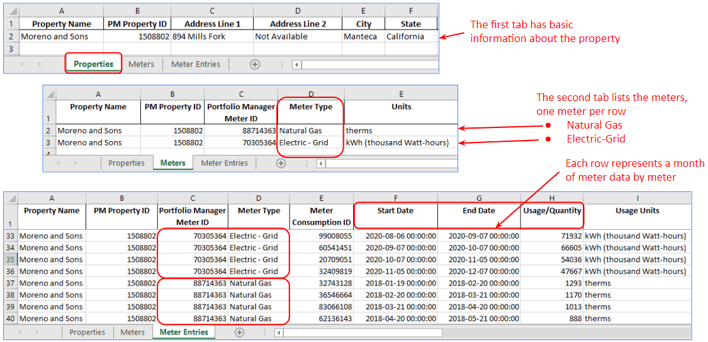
Import the Meter Data
Import the Meter Data¶
Importing an ENERGY STAR Portfolio Manager file that contains a tab for Properties and one or more tabs for meter data (see examples above) can be completed in one step, or the meter data can be imported in a separate step if desired.
Step 1: Import the data as you would any other file, using the Upload a Spreadsheet option.
Step 2: After the building data (the first tab in the file) has been imported, an option will appear to import Meter Data. Click on that button
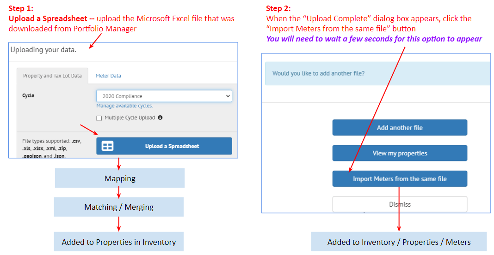
Step 3: After uploading the file, SEED will present a summary of the data that will be uploaded for each property
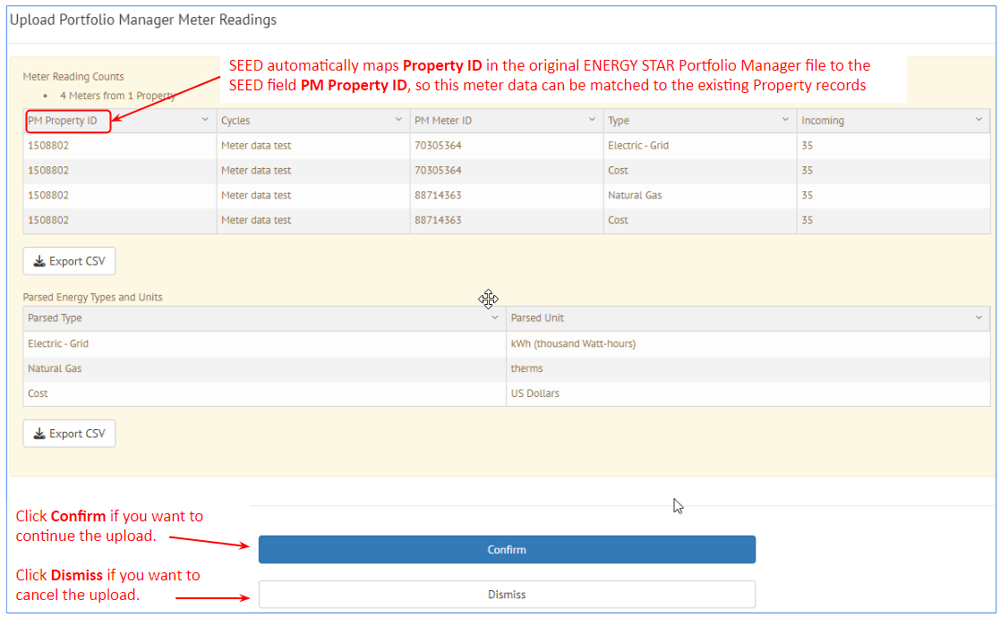
Step 4: Click the Confirm button, and SEED will upload the data and present the imported results.
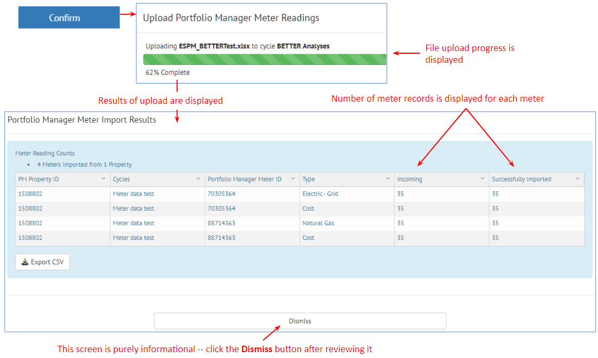
View the Imported Meter Data
View the Imported Meter Data¶
To see the imported meter data:
- Go to the Inventory view, View by Property tab
- The Lightning bolt icon to the left of a property record indicates there is meter data associated with the property
- Select the appropriate Cycle
There are two ways to see the meter data
- Option 1: Click the i (Info) icon to get to the Property Detail view, then click the Meters link at the center top of the page
- Option 2: Click the Lightning bolt icon to go directly to the **Meters" view for that property
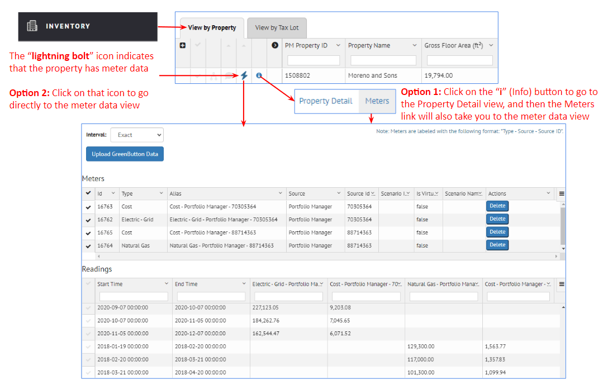
Meters: The Meters section at the top of the page shows one row for each type of meter data (actual usage, cost, etc), including the Meter ID as well as the type of data represented
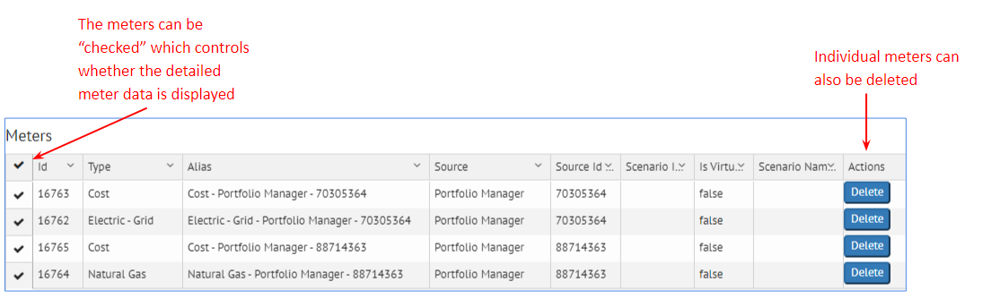
Readings: The Readings section of the page shows the individual meter readings for each meter
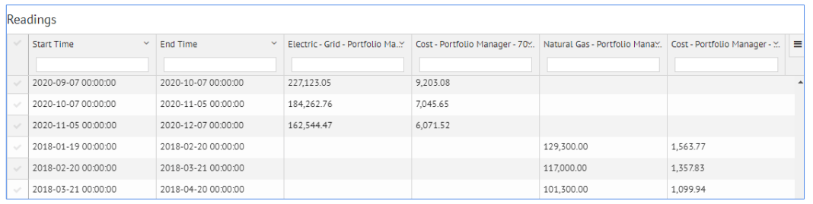
Interval Setting: SEED will show all the data if the Interval is set to Exact.
The Interval options allow viewing the data exactly as imported, as well as aggregated by month or year.
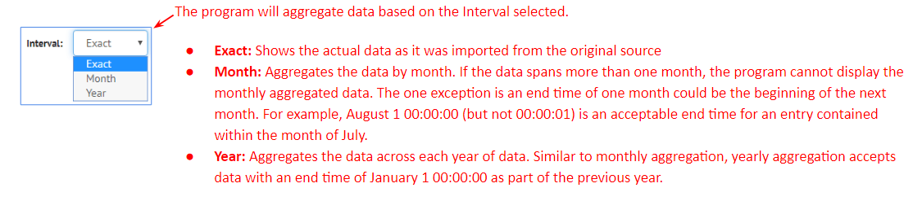
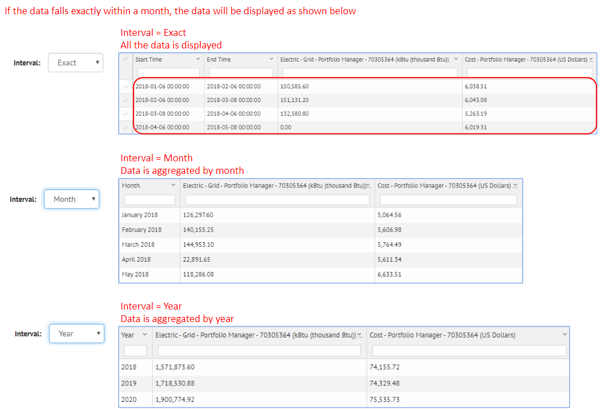
Import Green Button XML Meter Data¶
Upload Green Button data from Inventory Property Detail
Upload Green Button data from Inventory Property Detail¶
From the Inventory List view, Property Tab, click on the i (info) icon to see the Property Detail view.
- Step 1: Click the Upload Green Button Data button
- Step 2: Select the appropriate Dataset name
- Step 3: Click the Upload File button, browse to the desired Green Button XML file
- Step 4: Click the Open button
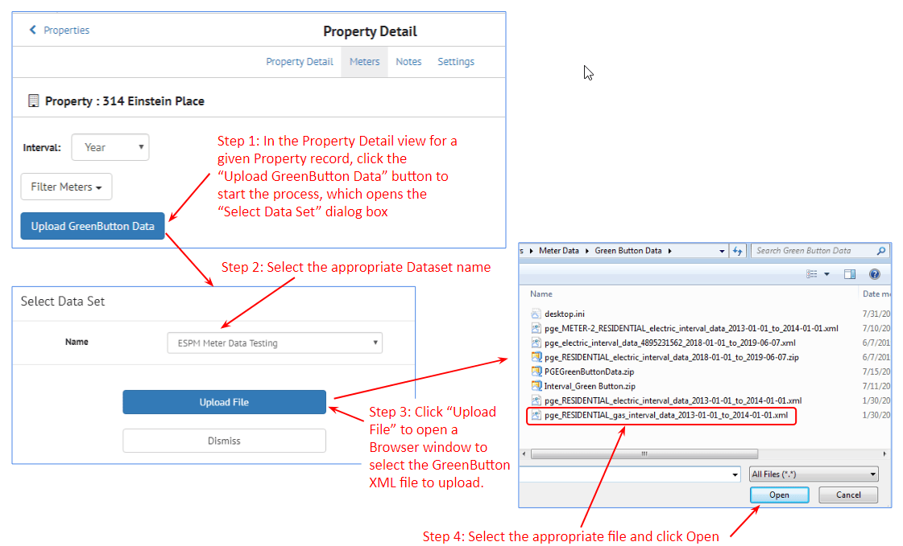
- Step 5: SEED displays a summary of the Green Button data
- Click Confirm to continue the file upload
- Click Dismiss to cancel the file upload
- Step 6: The Green Button file is uploaded
- Step 7: The results of the file upload are displayed, showing the meter readings that have been uploaded
- Step 8: Click the Complete and Refresh Page button to complete the upload
- Step 9: The Green Button data is added to the Meter view in the Property Detail
- GB is added as a prefix to the meter number for the Green Button data
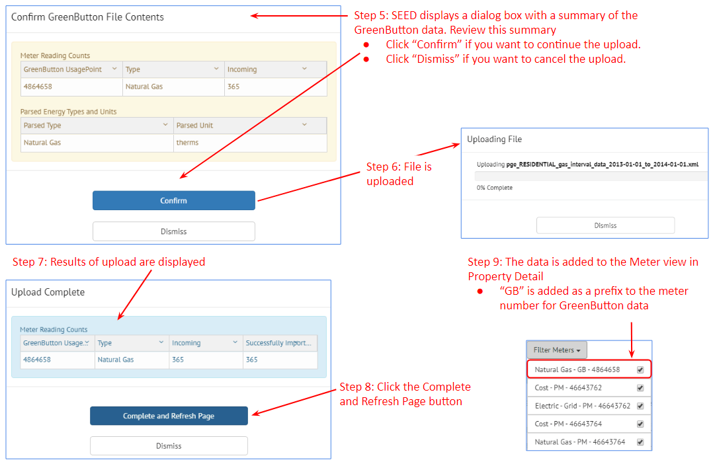
Display Units for Meter Data¶
Units Set in Organization / Settings
Units Set in Organization / Settings¶
The units for the data in the Inventory / Property Detail Meter view are controlled in the Organization / Settings view
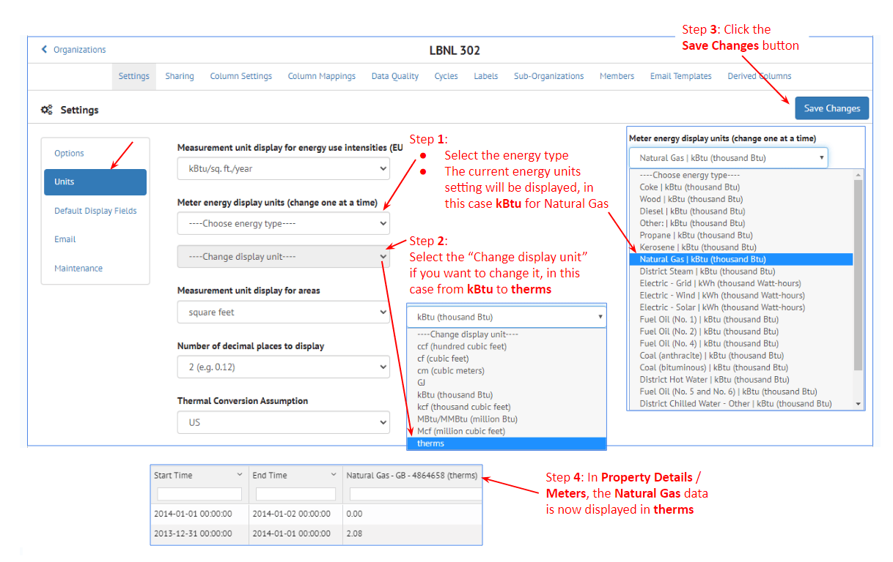